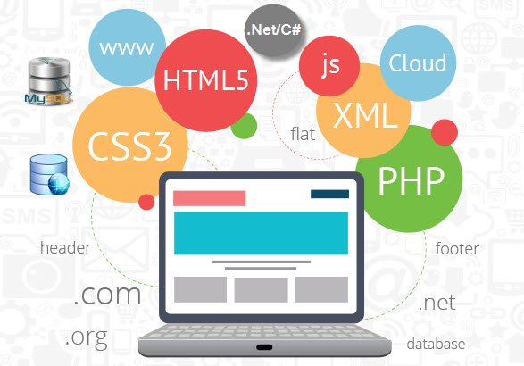

FUNCIONAMIENTO DE LAS APLICACIONES WEB Y CUALES SON LAS TECNOLOGIAS PARA EL DESARROLLO WEB
¿Qué es una Aplicación Web?
Una aplicación web es un programa de software que se accede a través de un navegador web en lugar de instalarse directamente en un dispositivo. Estas aplicaciones utilizan tecnologías web estándar como HTML, CSS y JavaScript para ofrecer una experiencia interactiva al usuario.

¿Cómo Funciona una Aplicación Web?
Las aplicaciones web funcionan mediante la interacción entre el cliente (navegador) y el servidor. A continuación se describe un proceso típico:
- Solicitud del Cliente: El usuario ingresa una URL en el navegador o interactúa con la aplicación web. El navegador envía una solicitud HTTP al servidor.
- Procesamiento del Servidor: El servidor recibe la solicitud y procesa los datos, que pueden implicar la consulta a una base de datos, la ejecución de lógica del negocio, etc. El servidor prepara una respuesta.
- Respuesta del Servidor: El servidor envía la respuesta al navegador del cliente. Esta respuesta puede incluir datos HTML, CSS, JavaScript y otros recursos necesarios para renderizar la página.
- Renderizado en el Navegador: El navegador recibe la respuesta del servidor y renderiza la página web para que el usuario la vea. Los archivos CSS se aplican para el estilo, y los scripts JavaScript pueden ejecutar funciones interactivas.
- Interacción Continua: La aplicación puede seguir interactuando con el servidor mediante solicitudes asincrónicas (AJAX), permitiendo la actualización dinámica de contenido sin recargar la página completa.
Tecnologías de Aplicaciones Web
Las aplicaciones web se desarrollan utilizando una variedad de tecnologías que trabajan en conjunto para proporcionar funcionalidad, apariencia y rendimiento. Algunas de las principales tecnologías incluyen:
- HTML (HyperText Markup Language): Lenguaje de marcado utilizado para estructurar contenido en la web.
- CSS (Cascading Style Sheets): Lenguaje utilizado para definir el diseño y la apariencia de los elementos HTML.
- JavaScript: Lenguaje de programación que permite agregar interactividad y dinámismo a las páginas web.
- Backend (Servidor): Tecnologías como Node.js, Python (Django, Flask), Ruby on Rails, PHP y Java, que gestionan la lógica de la aplicación y la base de datos.
- Base de Datos: Sistemas de gestión de bases de datos como MySQL, PostgreSQL, MongoDB y SQLite, que almacenan y gestionan la información de la aplicación.
- Frameworks y Librerías: Herramientas que facilitan el desarrollo, como React, Angular, Vue.js para el frontend, y Express.js, Spring Boot para el backend.

Referencias
-
“Eloquent JavaScript: A Modern Introduction to Programming” de Marijn Haverbeke.
Fecha: 2018, 3ª edición. Página consultada: p. 45-48 para temas sobre JavaScript en aplicaciones web.
Ver en línea
-
“HTML and CSS: Design and Build Websites” de Jon Duckett.
Fecha: 2011. Página consultada: p. 34-36 para diseño web y uso de CSS.
Comprar en Amazon
-
“JavaScript: The Good Parts” de Douglas Crockford.
Fecha: 2008. Página consultada: p. 12-15 para fundamentos de JavaScript.
Comprar en Amazon
-
“Designing Web APIs: Building APIs That Developers Love” de Brenda Jin, Saurabh Sahni y Amir Shevat.
Fecha: 2018. Página consultada: p. 72-75 para diseño y funcionalidad de APIs.
Comprar en Amazon
-
“Web Development with Node and Express: Leveraging the JavaScript Stack” de Ethan Brown.
Fecha: 2019. Página consultada: p. 99-103 para el uso de Node.js en aplicaciones web.
Comprar en Amazon